Total variation regularisation in tomography applications
This is a little program that allows to reconstruct a 3d image from a set of 2d projections. The program therefore realises the minimisation of the mathematical model
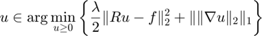
via a preconditioned primal dual hybrid gradient method (PDHGM) as described in [1]. In order to use the algorithm described in [1], we have to formulate our mathematical problem as

with 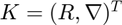,  , and
, and  . Here
. Here  denotes the characteristic function over the set 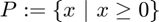. The PDHGM does not compute a solution of the primal problem, but of the primal-dual problem
denotes the characteristic function over the set 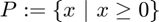. The PDHGM does not compute a solution of the primal problem, but of the primal-dual problem

here  is the Fenchel-dual of
is the Fenchel-dual of  which is in our case given as
which is in our case given as  , where 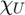 denotes the characteristic function over the set 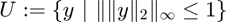. Given the matrix
, where 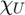 denotes the characteristic function over the set 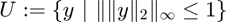. Given the matrix  and the resolvent operators of and 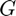, we compute the iterates as described in [1, Equation (4)].
and the resolvent operators of and 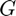, we compute the iterates as described in [1, Equation (4)].
Author: Martin Benning - mb941@cam.ac.uk
Date: 23.12.15
Contents
Load projection images and create radon operator
We are going to load exemplary projection images that were made from the MATLAB? dataset wmri. We further reduce the number of sampled angles to 45; we only use every fourth projection of the original dataset that included 180 projections in total (for the angular range 0 to 179).
load('projectionimages.mat')
angles = (0:4:179)';
imsize = [128, 128, size(proj, 2)];
projsmall = proj(:, :, 1:4:180);
Now we compute a matrix that maps the 3d image onto the sinogram of each z-component. It is recommended to open the parallel pool before executing the following line of code.
tic; R = radonmtx(imsize(1), angles, size(proj, 1)); toc;
Grab a coffee, this may take a while! Elapsed time is 5.856869 seconds.
Subsequently, we initalise the operator that maps the 3d image onto the projection images, and store the projection images as our data f in terms of a column vector.
Rop = matleftmult(R, [size(R, 2) size(proj, 2)]); f = permute(projsmall, [1 3 2]); f = f(:); %sinogram data for each z-slice scal = 4096; %rescaling of the data; acts as a regularisation parameter
Initialise 3d gradient operator
We initialise a 3d forward finite-difference approximation of the gradient operator with the following command.
Grad = fcthdlop(imsize, [imsize 3], @fwgradient3d, @bwgradient3d);
Initialise operator K
In order to initialise the operator , we only have to concatenate the operators Rop and Grad.
K = [Rop; Grad];
Initialise operators for F* and G
Given the operator , we need to initalise objects of the functionals and that allow the computation of the resolvent/proximity-operations.
Fstar = dualvpproj(imsize, size(projsmall)); Fstar.setproxdata(f*scal) G = nonnegproj(imsize);
Initialise PDHGM
Now we have all the ingredients to initalise an instance of the PDHGM. We set the number of iterations arbitrarily to 300.
solver = pdhgm(K, Fstar, G); solver.setmaxiter(300)
Compute preconditioners
Before we execute the solver, we need to choose parameters 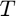 and 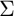, as they are required for the execution of [1, Equation (4)]. We have precomputed those in analogy to the example in [1, Lemma 2], for  , and stored the parameters in 'sigmatau.mat'. We load these parameters and pass them to the objects representing and .
, and stored the parameters in 'sigmatau.mat'. We load these parameters and pass them to the objects representing and .
load('sigmatau.mat')
Fstar.setproxparam(sigma1, sigma2);
G.setproxparam(tau);
Run PDHGM
Now we run 300 iterations of the PDHGM. We could change the value of the regulrisation parameter  ; however, in this setup the re-scaling of the initial data
; however, in this setup the re-scaling of the initial data  acts also as a regularisation. As we found the iteration to be more stable with 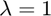, we stick to the re-scaling of .
acts also as a regularisation. As we found the iteration to be more stable with 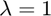, we stick to the re-scaling of .
lambda = 1; Fstar.setregularisationparameter(lambda) solver.solve
Visualise results
To conlcude, we visuale the 13-th slice of the variable 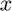 after 300 iterations of PDHGM.
x = reshape(solver.getvariables.x, imsize);
imagesc(x(:, :, 13))
axis image
colorbar
colormap(gray(512))
drawnow

References
[1] Pock, Thomas, and Antonin Chambolle. "Diagonal preconditioning for first order primal-dual algorithms in convex optimization." Computer Vision (ICCV), 2011 IEEE International Conference on. IEEE, 2011.